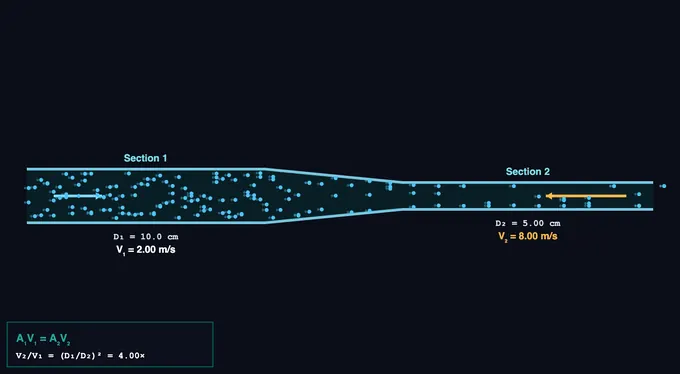

Continuity Equation Simulator
3D Model — Continuity Equation Simulator
Interactive continuity-equation simulator. See particles speed up through a pipe narrowing, with live A₁V₁ = A₂V₂ check, flow-rate Q, and practice mode.
A₁V₁ = A₂V₂ — Mass conservation in flow • Simulate • Explore • Practice • Quiz
Display Controls
Σ Live equations — values substituted
⚖ Section comparison — areas, velocities, Q
💡 What-if coach — insights
1 Overview
The Continuity Equation Simulator visualises the fundamental conservation of mass in incompressible flow: A₁·V₁ = A₂·V₂. A horizontal pipe narrows from a wide section to a constriction. As the cross-section shrinks, particles must speed up to keep the volumetric flow rate Q constant.
Adjust three sliders — D₁ (wide section), D₂ (narrow section), and V₁ — and watch V₂ jump as the geometry changes. Built for high-school and technical-college physics, with Practice and Quiz modes for self-testing.
2 Configuring the System
Defaults: D₁ = 10 cm, D₂ = 5 cm, V₁ = 2 m/s. Halving the diameter quarters the area, so V₂ = 4×V₁ = 8 m/s. Try the Garden Hose Nozzle preset to see a 5× speed-up; the Aorta to Capillary preset shows the inverse case where flow slows down dramatically into a wider total area.
3 Running the Cycle
Particles flow left-to-right, packed at velocity V₁ in the wide section and accelerating into the narrow section. Velocity arrows scale with V. Live readouts show A₁, A₂, V₁, V₂, Q, and the speed-up ratio V₂/V₁ = (D₁/D₂)². Six presets cover hoses, blood vessels, river constrictions, and wind tunnels.
4 The Underlying Theory
Four categories: Basics (mass conservation, incompressibility), Formulas (deriving A·V = const, Q = A·V), Applications (hose, aorta, river, wind tunnel, dam spillway), Common Errors (radius vs diameter, units, compressible flow).
5 Try a Problem
Practice generates problems — find V₂ given A₁, A₂, V₁; find required D₂ for a target speed-up; identify Q given any pair. Quiz tests conceptual + numerical with 5 questions.
6 Engineering Notes
- Velocity scales with the inverse square of diameter, not directly with diameter.
- The continuity equation only applies to incompressible flow (liquids, low-speed gases). Above ~Mach 0.3, density changes break the assumption.
- Q is conserved everywhere along a single pipe with no branches. With branches, Q in = sum of Q out.
- Pair this with the Bernoulli’s Principle simulator — pressure drops where velocity increases.
- Pair with the Reynolds Number simulator to check the flow regime.
Understanding the Continuity Equation

The continuity equation expresses conservation of mass for fluid flow. For an incompressible fluid (constant density ρ), the volumetric flow rate Q = A·V must be the same at every cross-section of a pipe with no branches: A₁·V₁ = A₂·V₂. Where the pipe is narrower, the fluid must move faster to deliver the same volume per second.
The V ∝ 1/D² Rule
| D₂/D₁ | A₂/A₁ | V₂/V₁ | Example |
|---|---|---|---|
| 1.0 | 1.00 | 1.0× | Constant pipe |
| 0.71 | 0.50 | 2.0× | Half-area constriction |
| 0.50 | 0.25 | 4.0× | Default sim |
| 0.33 | 0.11 | 9.0× | Hose with thumb partly over end |
| 0.20 | 0.04 | 25× | Spray nozzle |
| 0.10 | 0.01 | 100× | Fire-hose tip |
Garden Hose vs Aorta
Pinching a garden hose with your thumb is the most everyday demonstration of A·V = const. Reducing the open area by 4× quadruples the exit velocity, sending water much further. The same physics gives a fire hose its long throw — high pressure pumps water through a wide hose, but the narrow nozzle at the end does the speed-up. In your body, the aorta (D ≈ 2.5 cm) carries blood at v ≈ 30 cm/s. By the time blood reaches the capillaries (D ≈ 8 μm, but billions of them in parallel), the total cross-sectional area is >1000× larger and average velocity drops to <1 mm/s — ideal for slow gas exchange.
Volumetric vs Mass Flow Rate
For incompressible flow, volumetric flow rate Q = A·V is conserved. For compressible flow (gases at high speed, hot gas in turbines), it’s the mass flow rate ρ·A·V that’s conserved — density changes too, and the geometry-velocity relationship is different. The continuity equation for compressible flow becomes ρ₁·A₁·V₁ = ρ₂·A₂·V₂.
Continuity in Engineering
Engineers use continuity in pipe sizing, nozzle design, fan and pump selection, ventilation ducting, blood-flow modelling, and stream-flow predictions in environmental engineering. Combined with Bernoulli’s principle (which tells you how pressure changes with velocity), continuity gives you the basics for designing every fluid-handling system — from a simple garden hose to a turbojet engine.
Who Uses This Simulator?
Used by high-school physics students learning conservation laws, technical-college trainees in fluid mechanics, biomedical engineering students analysing circulatory flow, and HVAC trainees sizing ducts. Practice and Quiz modes ensure students can apply the formula to varied scenarios.
Explore Related Simulators
If you found this continuity equation simulator helpful, explore our Bernoulli’s Principle, Reynolds Number, Fluid Flow in Pipes, Pascal’s Law, Wind Tunnel, the Centrifugal Pump Test Rig, and the Hydraulic Turbine Test Rig for more practice.